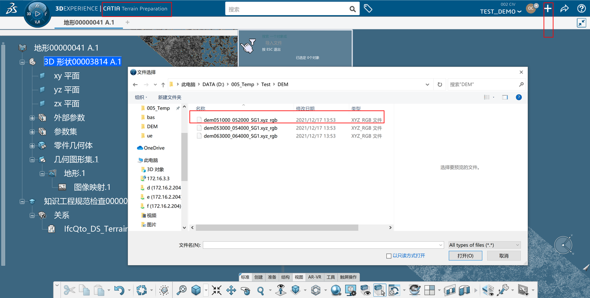
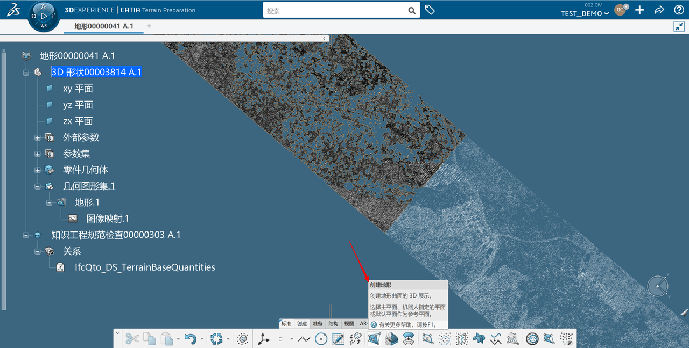
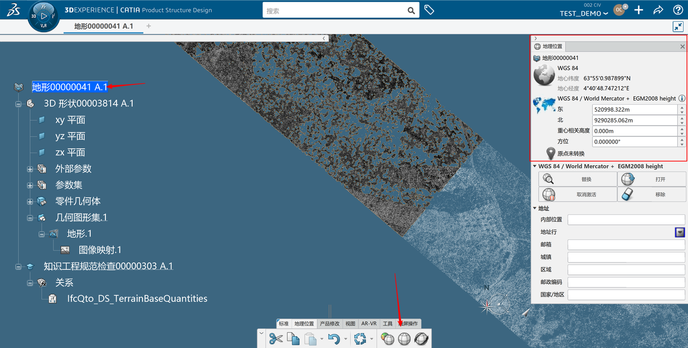
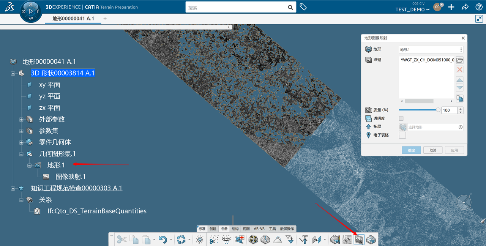
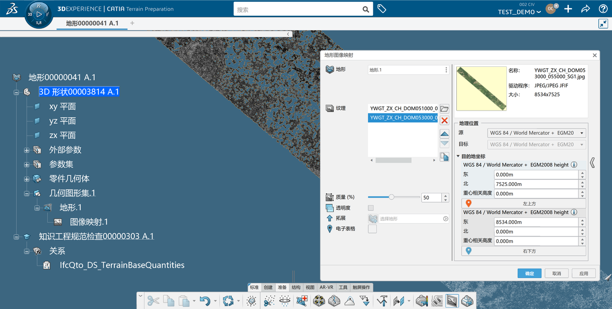
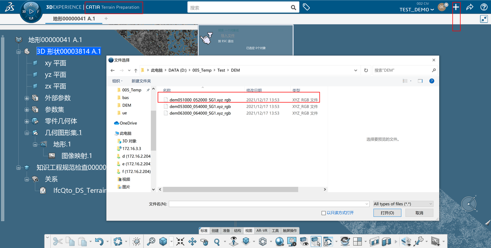
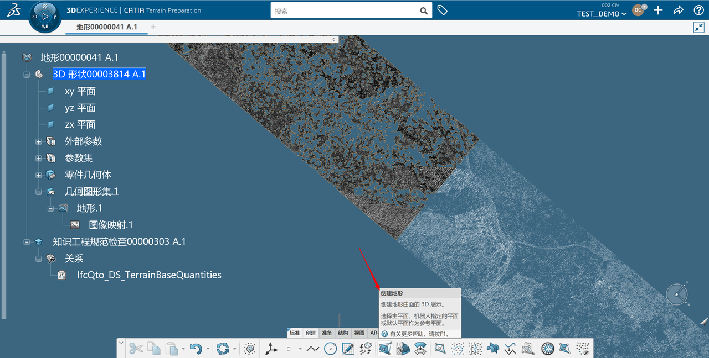
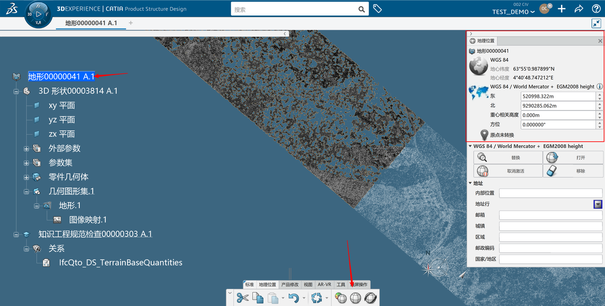
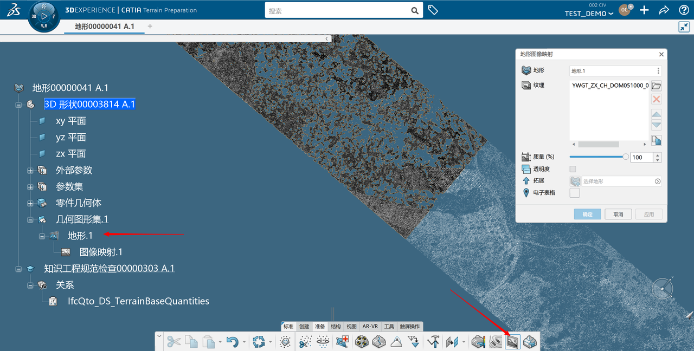
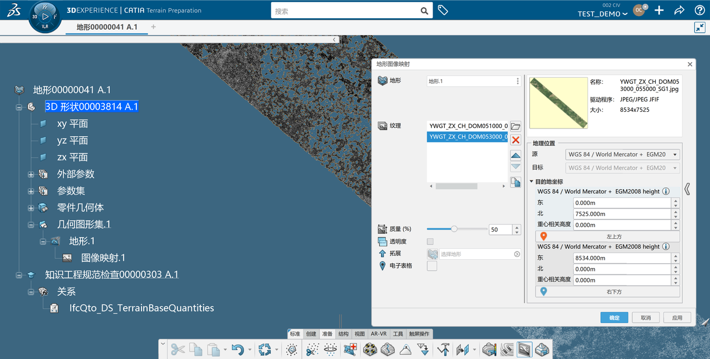

3DEXPERIENCE 地形贴图
修改所有文件后缀为*.xyz_rgb

进入地形模块，导入地形数据，生成点云 
将点云生成为曲面

双击顶节点，进入产品模块，设置好地形的方位。

选择地形曲面，选择贴图

设置好图片的数据，坐标系统即可。


修改所有文件后缀为*.xyz_rgb
进入地形模块，导入地形数据，生成点云 
将点云生成为曲面

双击顶节点，进入产品模块，设置好地形的方位。

选择地形曲面，选择贴图

设置好图片的数据，坐标系统即可。

From here you can search these documents. Enter your search terms below.
| Keys | Action |
|---|---|
| ? | Open this help |
| n | Next page |
| p | Previous page |
| s | Search |